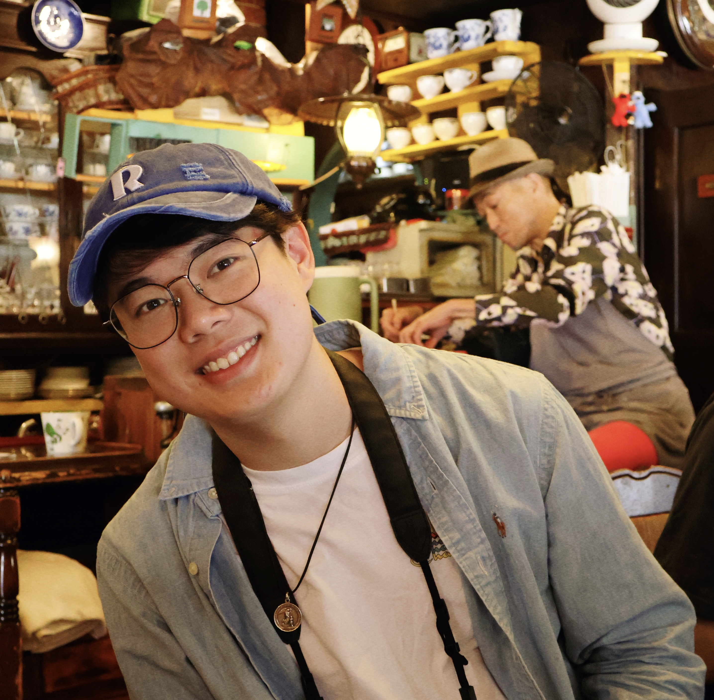
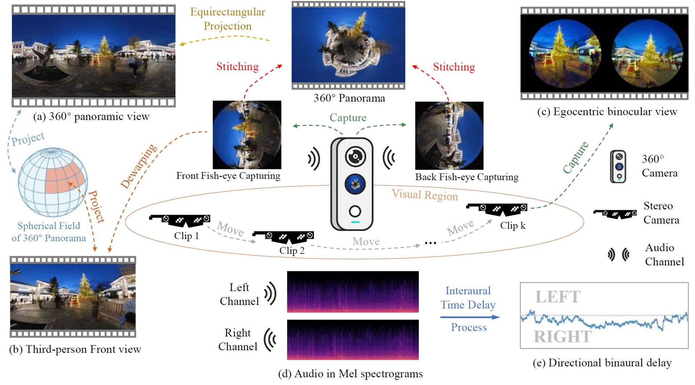
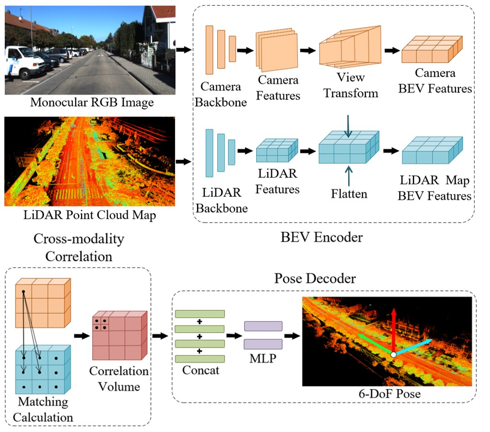
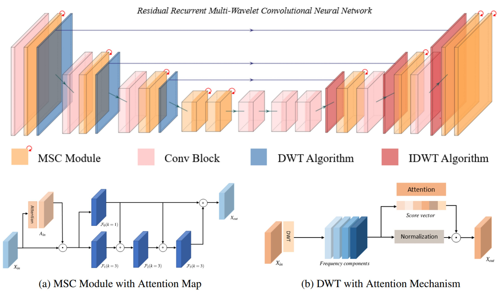
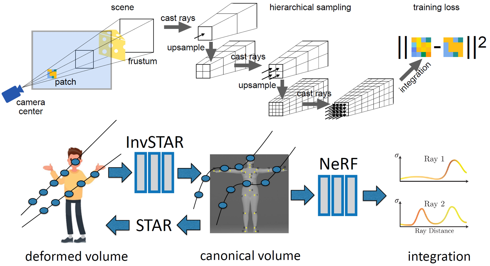
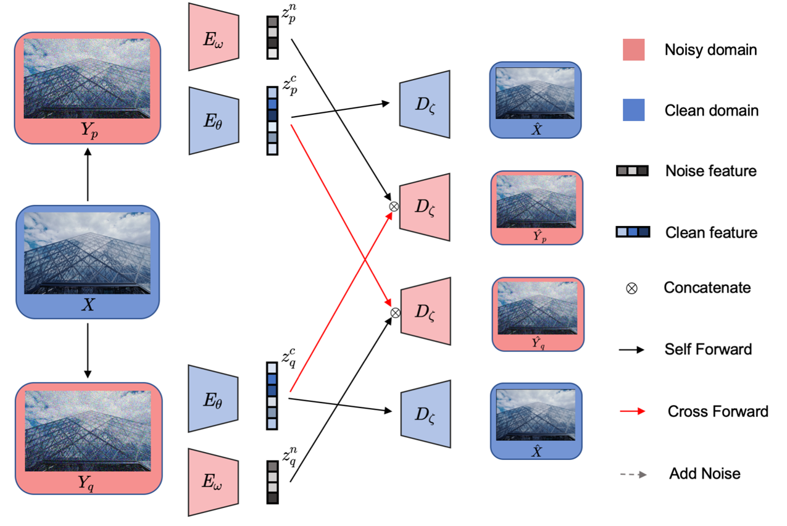

Hello there! I go by the name Hao Chen, but feel free to call me Calvin too.
I hail from the beautiful Cantonese region in southeastern China.
Currently, you can find me diving deep into the realm of AI as an active explorer
at the MI+x Lab
in the University of Birmingham.
Additionally, I proudly serve as an honorary Research Assistant at the Department of Clinical Neuroscience
at the University of Cambridge.
I earned my MSc in Computer Science from the University of Birmingham under the expert guidance of
Prof Jianbo Jiao.
My passion lies in sculpting better representations by delving into diverse modalities and easing the reliance on supervision.
These interests find their purpose in tackling vision and healthcare challenges,
specifically in the realms of Image Processing/Segmentation/Generation and the captivating world of Medical Imaging.
I'm gearing up to dive into the captivating world of neuroimaging analysis and generation
with a special emphasis on Trustworthiness
for my upcoming PhD journey at the Department of Clinical Neuroscience at Cambridge.
News
Apr 2024: Our paper accepted by CVPR 2024 was selected as Oral (3.3%), appreciate the fantastic efforts made by everyone.
Feb 2024: One dataset paper has been accepted by CVPR 2024, gratitude to all involved!
Dec 2023: One paper has been accepted by ICASSP 2024, congrats to the co-workers.
Nov 2023: One journal paper has been accepted by Osteoarthritis and Cartilage 2023.
Jul 2023: One paper has been accepted by ICCV 2023.
Oct 2022: Awarded as Kaggle Competition Master (rank top 0.1%).

360+X: A Panoptic Multi-modal Scene Understanding Dataset
Hao Chen, Yuqi Hou, Chenyuan Qu, Irene Testini, Xiaohan Hong, Jianbo Jiao
Computer Vision and Pattern Recognition (CVPR), Oral Presentation (3.3%), 2024
[Project]
[Arxiv]
[PDF]
 Multi-view Self-supervised Disentanglement for General Image Denoising
Multi-view Self-supervised Disentanglement for General Image Denoising
Hao Chen, Chenyuan Qu, Yu Zhang, Chen Chen, Jianbo Jiao
International Conference on Computer Vision (ICCV), 2023
[Project]
[Arxiv]
[PDF]
[Supp]
[BibTeX]
 Expanding from Unilateral to Bilateral: A Robust Deep Learning-based Approach for Radiographic Osteoarthritis Progression
Expanding from Unilateral to Bilateral: A Robust Deep Learning-based Approach for Radiographic Osteoarthritis Progression
Rui Yin, Hao Chen, Kaibin Zhang, Guangxu Yang, Fajian Shi, Yiqiu Jiang, Jianchao Gui
Osteoarthritis and Cartilage (IF 7.5)
[PDF] [Jornal]

BEVLoc: End-to-end 6-DoF Localization via Cross-modality Correlation Under Bird’S Eye View
Nanjie Chen, Jinping Wang, Hao Chen, Ying Shen, Shuai Wang, Xiaojun Tan
ICASSP 2024
[PDF]

Low-light Enhancement in the Frequency Domain
Hao Chen, Zhi Jin
Arxiv e-print, 2023
[PDF] [arXiv] [Code] [BibTeX]

Hierarchical Articulated NeRF for 3D Human Reconstruction and Rendering
Hao Chen, Shanxin Yuan, Helisa Dhamo, Ales Leonardis
European Conference on Computer Vision (ECCV) Reviewed, 2022
[PDF]

Noisy Visual Training: Learning Robust Low-level Image Prior
Hao Chen, Jianbo Jiao
UoB Master Thesis 2022
[PDF]
An Object Detection Method for Optimal Scheduling of Shared Bicycles
B Ding, H Chen, Z Dai, Q Huang, et al.
Patent, 2021: [CN113392799A]

OPC process of Computational Lithography
Feb 2023: 🥇Gold Medal (8th Place) in RSNA Screening Mammography Breast Cancer Detection (8/1,687)
Oct 2022: 🥇Gold Medal (2nd Place) in RSNA 2022 Cervical Spine Fracture Detection (2/883)
Mar 2023: 🥈Silver Medal in NFL Player Contact Detection (Top 4%)
Jul 2022: 🥈Silver Medal in Foursquare - Location Matching (Top 2%)
Dec 2022: 🏆First Place in 2022 ASML Machine Learning Competition
Dec 2021: 🏆First Place in 2021 ASML Machine Learning Competition
The public code repo for Kaggle RSNA competitions solutions is in here
Support: LaTex, Conda, Linux, Git, Download, Pandas, FileTransfer
Math: Statistics and some Proof, Probability, Matrix
Notes: Evolution Computation, CV & Imaging, AI & ML
![[BibTeX]](assets/paper/2023/LLE/LLE.jpg){kind=link}